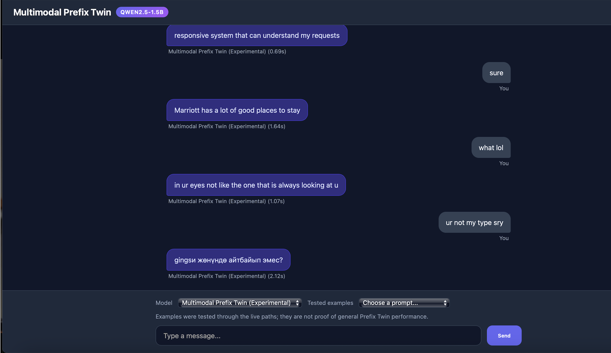
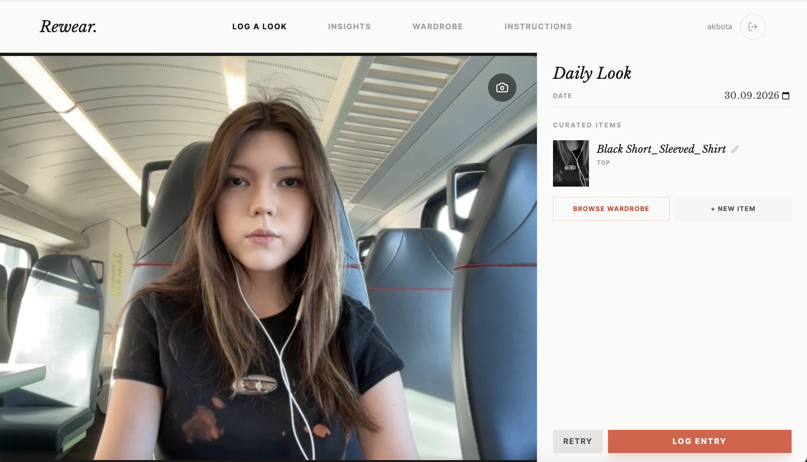
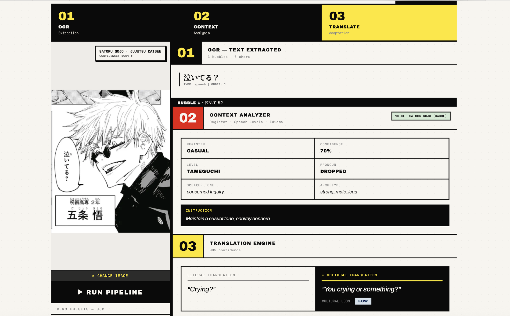
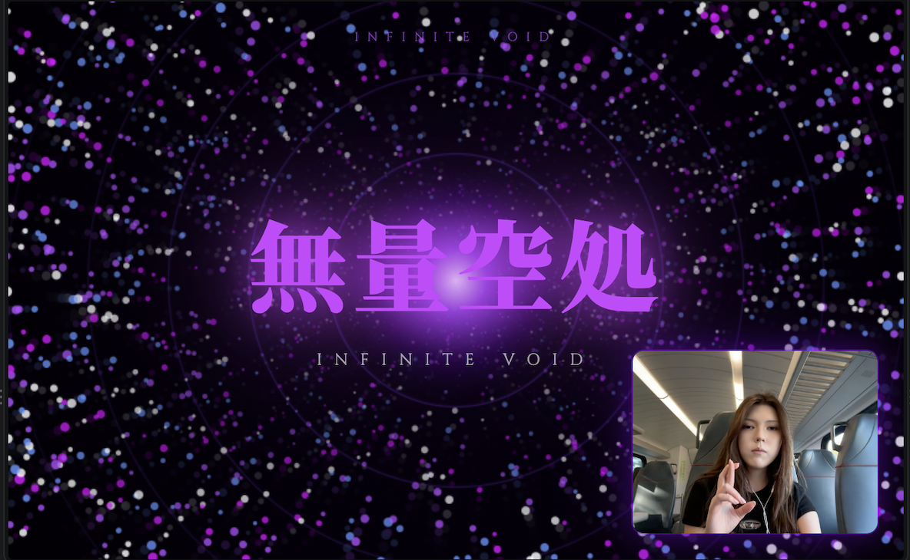
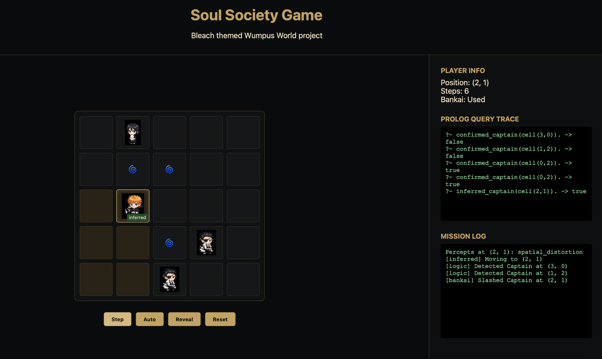
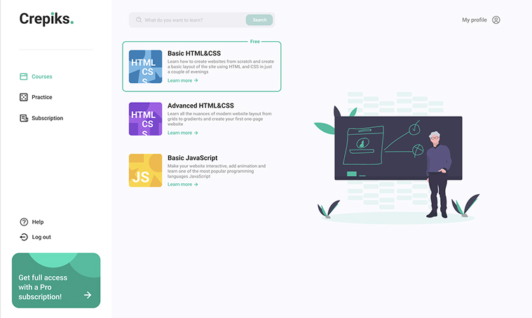

Akbota
Kengeskhan.
I build things that make complex ideas tangible—from full-stack products to experiments with language models.
Selected work
01 / PROJECTS
01 / EXPERIMENTDIGITAL
TWINPROJECT IMAGEAI / PersonalizationDigital Twin
A personalized language model experiment comparing LoRA with raw and reranked RAG.

01 / EXPERIMENTDIGITALTWINPROJECT IMAGE
Digital Twin
A personalized language model experiment comparing LoRA with raw and reranked RAG.
Project
An experiment in modeling personality with Qwen2.5, now exploring LoRA fine-tuning alongside retrieval-augmented generation (RAG). The latest work compares LoRA + raw RAG with LoRA + reranked RAG to study how different retrieval approaches affect personalized responses. A live comparison demo brings the configurations together, with evaluation covering similarity, persona, and authenticity.
My role
Model experimentation and evaluation: developed the personalization pipeline, compared LoRA and RAG configurations, and built the live comparison demo.
Stack & tools
- Python
- Qwen2.5
- LoRA fine-tuning
- RAG
- Retrieval reranking
- Model evaluation
Latest experiment
A V3 threshold sweep tested raw retrieval, reranking, and confidence gating on a fixed 10-record validation subset, using Groq-based judging. LoRA + reranked RAG without a gate had the highest overall score in this sweep (1.68), compared with LoRA + raw RAG (1.58) and LoRA-only (1.49). The selected exploratory threshold of 0.25 used RAG on 80% of validation records and scored 1.64 overall. These are preliminary validation results; a held-out comparison is needed to assess generalization.

02 / TEAM PROJECTRE
WEARPROJECT IMAGEFull stack / SustainabilityReWear
A team-built wardrobe app for organizing clothes and outfits.

02 / TEAM PROJECTREWEARPROJECT IMAGE
ReWear
A team-built wardrobe app for organizing clothes and outfits.
Project
A collaborative wardrobe application with a React interface and Flask backend. The app brings together account access, clothing uploads, wardrobe management, outfits, and clothing detection.
My role
Backend contributor: worked on Flask blueprints, database migrations, image upload handling, and Docker setup, including fixes for upload filenames and database queries.
Stack & tools
- Python
- Flask
- React / Vite
- SQLAlchemy
- Database migrations
- Docker / Nginx

MANGALENSPROJECT SCREENSHOTAI / LanguageMangaLens
Context-aware manga translation, from panel image to English dialogue.

MANGALENSPROJECT SCREENSHOTMangaLens
Context-aware manga translation, from panel image to English dialogue.
Project
A four-stage pipeline extracts Japanese dialogue with OCR, refines recognition errors, analyzes linguistic and cultural context, and generates English translations informed by character voice and series terminology. Results stream to the interface bubble by bubble.
My role
Application development: connected the OCR, context analysis, and translation pipeline to a React interface with streaming results.
Stack & tools
- Python
- Flask
- React / Vite
- Groq Vision & LLMs
- MeCab / UniDic
- Server-sent events

04 / COMPUTER VISIONRYOIKI
TENKAIPROJECT IMAGEComputer vision / InteractionRyoiki Tenkai
Hand gestures become real-time browser animations.

04 / COMPUTER VISIONRYOIKITENKAIPROJECT IMAGE
Ryoiki Tenkai
Hand gestures become real-time browser animations.
Project
A camera-based gesture recognition system inspired by Jujutsu Kaisen. MediaPipe extracts hand landmarks, a trained classifier identifies gestures, and a WebSocket connection triggers animations in the browser.
My role
End-to-end development: collected gesture data, trained the classifier, and connected live inference to browser rendering.
Stack & tools
- Python
- MediaPipe
- Scikit-learn
- Flask-SocketIO
- JavaScript
- Canvas / WebGL
 05 / LOGIC SYSTEMSBA
05 / LOGIC SYSTEMSBA
EATSPROJECT IMAGELogic / RecommendationsBA Eats
A logic-based guide to restaurants in Buenos Aires.
05 / LOGIC SYSTEMSBAEATSPROJECT IMAGE
BA Eats
A logic-based guide to restaurants in Buenos Aires.
Project
A restaurant recommendation app powered by a Prolog knowledge base. A dynamic questionnaire captures cuisine, budget, dietary needs, and atmosphere; logical rules match those preferences to restaurant facts. A Python bridge handles isolated user sessions and access to the shared inference engine.
My role
Application development: built the recommendation workflow across the knowledge base, Python inference bridge, and Flask interface.
Stack & tools
- SWI-Prolog
- PySWIP
- Python
- Flask
- JavaScript / CSS

06 / AGENT SIMULATIONSOUL
SOCIETYPROJECT IMAGEAgents / LogicSoul Society
A themed Wumpus world simulator for logic-based agents.

06 / AGENT SIMULATIONSOULSOCIETYPROJECT IMAGE
Soul Society
A themed Wumpus world simulator for logic-based agents.
Project
A Bleach-themed agent simulation that pairs a Prolog knowledge base and inference rules with a Flask interface. A batch test runner supports analysis of simulation performance, and Docker packages the application.
My role
Project development: worked across the simulation, logical agent behavior, web interface, and performance analysis.
Stack & tools
- Python
- Flask
- SWI-Prolog
- Agent simulation
- Docker
- Performance testing

07 / EARLY WORKCREPIKSPROJECT IMAGEStartup / EducationCrepiks Academy
A high-school education startup backed by around $10,000 in grants.

07 / EARLY WORKCREPIKSPROJECT IMAGECrepiks Academy
A high-school education startup backed by around $10,000 in grants.
Project
An education startup we built in high school. Our team raised around $10,000 in grants from companies including Chevron, KMF, and Beeline. The linked frontend repository represents one part of the broader Crepiks Academy work.
My role
Startup team member and frontend contributor. This was part of my early experience turning an education idea into a product.
Stack & tools
- Frontend development
- Education product
About
02 / BACKGROUNDCurious about how intelligent systems work—and how to make them useful, reliable, and human.
I study computer science at Minerva University, with a focus on AI. My work moves between building software, testing model behavior, and teaching others to code.
At NeuroKids, I taught AI and programming to students and adults. I also work as a CS teaching assistant.
Earlier work
In high school, I was part of BinEco and Crepiks—my first experience turning ideas into something people could use.